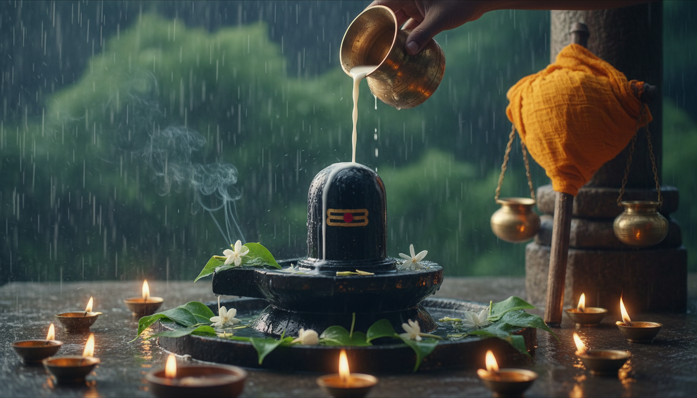

वैदिक पंचांग के अनुसार, सावन (श्रावण) का महीना केवल एक ऋतु परिवर्तन नहीं, बल्कि ब्रह्मांडीय ऊर्जा के साथ स्वयं को संरेखित करने का एक दुर्लभ अवसर है। वर्ष 2026 में, 11 जुलाई से 9 अगस्त की समय अवधि ज्योतिषीय और तंत्र-मंत्र साधना के लिए असाधारण रूप से शक्तिशाली है। 'श्रावण' शब्द की उत्पत्ति 'श्रवण' से हुई है, जिसका अर्थ है दिव्य ध्वनियों को सुनने की क्षमता। स्रोत ग्रंथों में 'काल' का अर्थ 'समय' या 'मृत्यु' है और 'सर्प' उस ऊर्जा प्रवाह का प्रतीक है जो हमारी नियति को प्रभावित करता है। सावन का यह कालखंड इन्हीं जकड़नों से मुक्ति और 'स्व' के भीतर छिपे शिवत्व को जागृत करने का महापर्व है।

1. सावन 2026: पंचांग गणना और समय का अंतर्विरोध
2026 के कैलेंडर में क्षेत्रीय पंचांग प्रणालियों के आधार पर सावन की तिथियों में भिन्नता दिखाई देती है। यह अंतर मुख्य रूप से चंद्रमा की गणना (पूर्णिमांत बनाम अमांत) और सौर संक्रांति के कारण उत्पन्न होता है।
| पंचांग मॉडल | क्षेत्रीय/ज्योतिषीय पद्धति | प्रारंभ तिथि | समाप्ति तिथि | विशिष्ट विशेषताएं |
|---|---|---|---|---|
| पूर्णिमांत मॉडल A | विशिष्ट उत्तर भारतीय वंशावली | 11 जुलाई, 2026 | 09 अगस्त, 2026 | मानसून के चरम संक्रमण और प्रारंभिक ग्रीष्मकालीन संक्रांति पर आधारित। |
| मानक पूर्णिमांत | मानक उत्तर भारतीय पंचांग | 18 जुलाई, 2026 | 15 अगस्त, 2026 | मध्य अगस्त की पूर्णिमा पर समाप्त। |
| ड्रिक पंचांग गणना | मानक ड्रिक गणना | 30 जुलाई, 2026 | 28 अगस्त, 2026 | गुरु पूर्णिमा के तुरंत बाद प्रारंभ। |
| अमांत मॉडल | दक्षिण और पश्चिम भारत | 13 अगस्त, 2026 | 11 सितंबर, 2026 | उत्तरी सावन के बाद की पहली अमावस्या से शुरू। |
| सौर मॉडल (साउन) | नेपाल और हिमालयी क्षेत्र | 16 जुलाई, 2026 | 16 अगस्त, 2026 | सूर्य का कर्क राशि में प्रवेश (कर्क संक्रांति) पर आधारित। |
जुलाई 11 - अगस्त 9 की महत्ता: वरिष्ठ ज्योतिषीय विश्लेषण के लिए इसी कालखंड को आधार माना गया है क्योंकि यह मानसून के चरम संक्रमणकालीन ऊर्जा को समाहित करता है। इस दौरान पृथ्वी का इलेक्ट्रोमैग्नेटिक क्षेत्र (Electromagnetic field) अत्यधिक संवेदनशील होता है, जो मंत्रों की ध्वनि तरंगों और शारीरिक साधना के प्रभाव को कई गुना बढ़ा देता है।
2. महत्वपूर्ण तिथियां और खगोलीय घटनाएं
सावन 2026 के दौरान सोमवार व्रतों के अतिरिक्त कुछ 'आध्यात्मिक द्वार' भी खुल रहे हैं जो साधकों के लिए अत्यंत महत्वपूर्ण हैं।
सावन सोमवार व्रत तालिका (11 जुलाई - 9 अगस्त चक्र):
- प्रथम सोमवार (13 जुलाई): तिथि: कृष्ण त्रयोदशी/चतुर्दशी संधि। साधना लक्ष्य: मानसिक शुद्धि और गहरे अवचेतन अवरोधों (Subconscious blocks) का निवारण।
- द्वितीय सोमवार (20 जुलाई): तिथि: शुक्ल पंचमी। साधना लक्ष्य: हृदय चक्र (Heart Chakra) का उद्घाटन और भावनात्मक उपचार।
- तृतीय सोमवार (27 जुलाई): तिथि: शुक्ल द्वादशी/त्रयोदशी संधि। साधना लक्ष्य: आध्यात्मिक कवच (Spiritual Armor) का निर्माण और शक्ति संचय।
- चतुर्थ सोमवार (03 अगस्त): तिथि: कृष्ण पंचमी। साधना लक्ष्य: आर्थिक स्थिरता और साधना का उदयापन।
विशेष आध्यात्मिक द्वार:
- देव शयनी एकादशी (25 जुलाई): यहाँ से 'गौरी व्रत' का प्रारंभ होता है, जो स्त्री शक्ति (Shakti) के संवर्धन का पांच दिवसीय विशेष काल है।
- गुरु पूर्णिमा (29 जुलाई): इसे आध्यात्मिक दीक्षा और परामर्श संरेखण के लिए 'अंतिम द्वार' माना गया है।
ग्रहण का अवशिष्ट प्रभाव: यद्यपि मुख्य साधना काल 9 अगस्त को समाप्त हो रहा है, किंतु इसके तुरंत बाद सूर्य ग्रहण (12 अगस्त) और चंद्र ग्रहण (28 अगस्त) पड़ रहे हैं। 12 अगस्त का ग्रहण 'पितृ तर्पण' और राहु दोष निवारण के लिए महत्वपूर्ण है, जबकि 28 अगस्त का ग्रहण मनस (चंद्रमा) की शुद्धि की मांग करता है। अतः साधकों को 9 अगस्त के बाद भी अपनी आध्यात्मिक शुचिता बनाए रखनी चाहिए।
3. शिव आराधना की विधियां: रुद्राभिषेक और कांवड़ यात्रा
शिव आराधना केवल कर्मकांड नहीं, बल्कि ऊर्जा के शुद्धिकरण का एक विज्ञान है।
रुद्राभिषेक का यांत्रिक विज्ञान: रुद्राभिषेक की सफलता के लिए एक विशिष्ट क्रम का पालन अनिवार्य है:
- आसन और त्रिपुंड: साधक को ऊनी या कुशा के आसन पर पूर्व की ओर मुख करके बैठना चाहिए। माथे पर भस्म से तीन क्षैतिज रेखाएं (त्रिपुंड) लगानी चाहिए, जो अज्ञान और तीनों गुणों के दहन का प्रतीक हैं।
- रुद्राक्ष संरेखण: साधना के दौरान प्राणिक आवृत्तियों को अवशोषित करने के लिए सिद्ध रुद्राक्ष माला धारण करना आवश्यक है।
- संकल्प और क्रमबद्ध अभिषेक: शिवलिंग का मुख उत्तर की ओर रखते हुए, मंत्रोच्चार के साथ धीरे-धीरे द्रव्यों को अर्पित करना चाहिए।
रुद्राभिषेक द्रव्यों का प्रभाव तालिका:
| द्रव्य (Substance) | विशिष्ट लाभ (Physiological & Circumstantial) |
|---|---|
| कच्चा दूध | मानसिक शांति और गंभीर मनोवैज्ञानिक अवरोधों की मुक्ति। |
| ताजा दही | क्रोध और अहंकार का शमन, सूक्ष्म शरीर में शीतलता। |
| शुद्ध देसी घी | शारीरिक जीवन शक्ति, दीर्घकालिक रोगों का निवारण। |
| शहद | वाणी में मधुरता और पुराने भावनात्मक घावों (Trauma) का उपचार। |
| गन्ने का रस | प्रचुरता (लक्ष्मी) का प्रतीक; व्यावसायिक बाधाओं का समाधान। |
| गंगाजल | कर्मिक शोधन (Karmic Cleansing) और मोक्ष मार्ग। |
कांवड़ यात्रा का महत्व: कांवड़ यात्रा हलाहल विष के प्रभाव को शांत करने के लिए शिव पर शीतल जल अर्पित करने की पौराणिक घटना का प्रतीक है। 2026 में जल अर्पित करने की मुख्य तिथि सावन शिवरात्रि (11 अगस्त) है।
- हरिद्वार से नीलकंठ: ~16 किमी, पहाड़ी रास्ता (कठिन)।
- सुल्तानगंज से बैद्यनाथ धाम: ~105 किमी, रेतीला रास्ता (मध्यम)।
- गौमुख से काशी विश्वनाथ: ~280 किमी, हिमनद क्षेत्र (अत्यंत कठिन)।
4. मंत्र चिकित्सा: महामृत्युंजय ध्वनि तरंगें
आधुनिक ध्वनि चिकित्सा (Sound Therapy) के अनुसार, महामृत्युंजय मंत्र एक 'लो-पास फिल्टर' (Low-pass filter) की तरह कार्य करता है, जो मस्तिष्क की अशांत आवृत्तियों (Chaotic mental vibrations) को हटाकर मन को शांत करता है।
ॐ त्र्यम्बकं यजामहे सुगन्धिं पुष्टिवर्धनम्।
उर्वारुकमिव बन्धनान् मृत्योर्मुक्षीय माऽमृतात्॥
यह मंत्र विशेष रूप से ग्रहण काल के दौरान 'अनाहत' (हृदय) और 'सहस्रार' (मस्तिष्क) चक्रों की सुरक्षा के लिए एक सुरक्षात्मक ढाल का निर्माण करता है।
5. कालसर्प और मंगल दोष: ज्योतिषीय परामर्श और उपचार
सावन का महीना कालसर्प और मंगल दोष जैसे जटिल कर्मिक अवरोधों को दूर करने के लिए सर्वोत्तम है।
कालसर्प दोष के 12 प्रकार और प्रभाव:
- अनंत: आत्म-पहचान का संकट और वैवाहिक देरी।
- कुलिक: वित्तीय अस्थिरता और पारिवारिक कलह।
- वासुकि: आत्मविश्वास की कमी और भाई-बहनों से विवाद।
- शंखपाल: घरेलू अशांति और करियर में अचानक रुकावट।
- पद्म: रचनात्मक अवरोध और संतान संबंधी चिंता।
- महापद्म: अज्ञात भय और गुप्त शत्रुओं का डर।
- तक्षक: विवाह में अलगाव और साझेदारी में धोखा।
- कर्कोटक: अचानक भावनात्मक संकट और संपत्ति विवाद।
- शंखचूड़: भाग्य में उतार-चढ़ाव और पिता से तनाव।
- घातक: सत्ता संघर्ष और प्रतिष्ठा की हानि।
- विषधर: आय के अस्थिर स्रोत और यात्रा संबंधी चिंता।
- शेषनाग: नींद के विकार और अवचेतन भय।
निवारण: छाया एकीकरण (Shadow Integration): त्रयंबकेश्वर (नासिक) में पूजन के साथ संज्ञानात्मक व्यवहार संरेखण आवश्यक है। इसमें राहु की अनियंत्रित महत्वाकांक्षा को संतुलित करना और केतु के वैराग्य को आत्मसात करना शामिल है। यह 'शैडो इंटीग्रेशन' व्यक्ति को ईमानदारी और सेवा भाव की ओर ले जाता है।
मंगला गौरी व्रत और व्यवहार संशोधन: सावन के मंगलवार (14, 21, 28 जुलाई और 4 अगस्त) को मंगल दोष निवारण के लिए यह व्रत किया जाता है। सुहाग पिटारा की 16 वस्तुएं (जैसे कांच की चूड़ियां, कंघी, तेल, दर्पण, बिछिया, नथ, मेहंदी, हल्दी आदि) अर्पित की जाती हैं। यह सूक्ष्म अनुशासन मंगल की उग्र और आवेगी न्यूरोलॉजिकल प्रतिक्रियाओं (Erratic neurological responses) को शांत करने के लिए बनाया गया है।
6. जीवनशैली में बदलाव और आध्यात्मिक सुझाव
सावन के दौरान किया गया संयम स्वास्थ्य और ऊर्जा शरीर दोनों के लिए अनिवार्य है:
- सात्विक आहार और 'अग्नि': मानसून के दौरान शरीर की पाचन अग्नि (Agni) मंद हो जाती है। इसलिए प्याज, लहसुन, मांस और मदिरा का त्याग कर केवल हल्का सात्विक भोजन करना चाहिए।
- रिलेशनल री-अलाइनमेंट (Relational Re-alignment): जोड़ों के लिए 'मौन शास्त्र' का अभ्यास अत्यंत प्रभावी है। क्रोध के क्षणों में मौन धारण करना मंगल की नकारात्मक ऊर्जा को रोकता है। शिवलिंग पर संयुक्त रूप से जल अर्पित करने से ऊर्जा क्षेत्र (Pranamaya Kosha) आपस में जुड़ते हैं और संबंधों में स्थिरता आती है।
7. निष्कर्ष: आध्यात्मिक कल्याण का मार्ग
सावन 2026 केवल धार्मिक अनुष्ठानों का समय नहीं है, बल्कि यह स्वयं के कर्मिक बोझ को कम करने का एक वैज्ञानिक अवसर है। 11 जुलाई से 9 अगस्त तक की यह साधना आपके भीतर की नकारात्मकता रूपी 'हलाहल' को शिव की कृपा से सकारात्मकता के 'अमृत' में बदलने की क्षमता रखती है। धर्म, सत्यनिष्ठा और निरंतर मंत्र जाप के साथ अपनी यात्रा जारी रखें; यही वास्तविक आध्यात्मिक कल्याण का मार्ग है।
हर हर महादेव!
Sources
- Shravan Maas 2026: Shiva Rituals, Fasting & Rudraksha Guide
- Shravan Month 2026: Dates, Rituals & Which Rudraksha to Wear - Complete Guide
- When will Sawan 2026 start and end? Know dates, Somwar vrat ...
- Shravan Month 2026 (Sawan Maas): Significance, Muhurat, Puja and Vrat Vidhi - Rudraksha Ratna
- Shravan 2026 Complete Guide: Dates, Somvar Vrat, Rudrabhishek, Nag Panchami, Varalakshmi Vratam, Bonalu & Pandit Booking - PujaPurohit
- Sawan Somvar 2026: Dates, Vrat Vidhi and History - Anytime Astro
- Sawan - The Most Sacred Month for Mahadev's Worship - Sadhana Shop
- Shravan Month 2026 Start & End Date, Calendar, Significance & Fasting Days
- Sawan 2026 Dates, Significance and Important Rituals - Archyam
- Kaal Sarp Dosha: Complete Effects & Remedies Guide - AstroSight
- Descending Kaal Sarp Dosh - Pandit Pankaj Guruji
- Kaal Sarp Dosh Pooja: Complete Guide to Symptoms, Effects, Remedies, and Rituals
- Unlocking Divine Grace: The Sacred Ritual of Rudrabhishek in Sawan | Pujapathvedic Blog
- Best Pandit for Kaal Sarp Puja in Trimbakeshwar, Nashik
- Kaal Sarp Dosh Puja Trimbakeshwar - Pandit Pankaj Guruji
- Kaal Sarp Puja In Trimbakeshwar – Cost And Dates Guide
- How to Get Rid of Mangal Dosha Naturally and Spiritually
- Remedies for Mangal Dosha: Effective Solutions for Marriage - AstroSight
- Facing Mangal Dosh? Here's How to Fix It Fast - Book My Pooja
- Mangala Gauri Vrat 2026: A Sacred Ritual For Marital Bliss And Prosperity
- On the Sacred Shravana Mangalvar, Participate in Mangala Gauri Vrata and Lalita Sahasranama Archana in Varanasi - Devaseva
- कांवड़ यात्रा |Haridwar Kawad Yatra 2026 | Kanwar Mela Dates |Allinharidwar
- Tempo Traveller for Kanwar Yatra- Booking Tips, Routes, Rates, and What Nobody Tells You
- Kanwar Yatra Mela in Haridwar, Uttarakhand
- Kanwar Yatra - Wikipedia
- What is Kanwar Yatra? Date, route, safety, controversy - The Economic Times
- Best Kanwar Yatra 2025 - Route, Distance, & Cabs at TaxiYatri
- Delhi Kanwar yatra traffic advisory: Here are routes to avoid, road closures, dates and diversions; Check full list - The Economic Times
- Rudrabhishek Puja: Mantra, Samagri, Benefits & How To Perform The Puja At Home
- Rudrabhishek Rituals: Items, Mantras, and Significance - The Vedic Puja -
- Rudrabhishek Puja, Puja Vidhi, Benefits, and Procedure - Rudraksha Ratna
- Rudrabhishek (Standard) - Baglamukhi Havan Nalkheda | Acharya Chetan Tiwari
- Detailed step by step procedure to perform Rudrabhishek - Amar Granth
- Why No Marriage in Sawan 2025? Do These Remedies For A ...
- Everything You Need to Know About the Sawan Somvar Vrat and Puja Rituals - Astroyogi
- Understanding the Spiritual Significance of the Sawan Month - Divine Hindu
- Manglik Dosha: Effects and solutions before wedding - StarsTell
- Traditional & Spiritual Remedies for Mangal Dosha | Puja Anushthan
- Mangala Gauri fast - The Indian Panorama
- Kaal Sarp Dosh - Vedaangam
- Talk to Astrologer - Astro Live
- Kaal Sarp Dosh - Types of Kaal Sarp Yoga, Kaal Sarp Dosha Remedies - Eshwar Bhakti
- Kinds Of Kaal Sarpa Yoga, Its Effects And Remedial Measures By Prabhakar Dutt Tiwari
- Kaal Sarp Dosh Procedure | Step-by-Step Puja Guide - Trimbakeshwar Puja Vidhi
- Kaal Sarp Dosh Remedies - Pandit Milind Guruji
- Remedies for Kaal Sarpa Dosha | PDF | Astrology | Esoteric Cosmology - Scribd
- About Shravana Nakshatra in Vedic Astrology - Rudraksha Ratna
- Auspicious Muhurat In July 2026- Good Days And Dates for All Your Events! June 18, 2026, Thursday - Astroyogi.com
- 2026 Shubh Muhurat Calendar · Auspicious Dates for Every Puja & Purchase - Gopuja
- Guru Pushya Yoga on 21st May 2026
- 2026 Festivals - Shri Mangal Mandir
- Gauri Vrat 2026: Date, Meaning, Vrat Katha, Puja and Mantra - Rudraksha Ratna
- Vyasa Purnima - Janmatithi
- About Gauri Pujan 2026: Story, History & Significance
- Sawan 2025: Start & end dates, significance, fasting rituals, and key details
- Kanwar Yatra 2025: History, Rituals, Routes & Dates | Tour My India
- Sawan Month 2026: Dates, Rituals & Spiritual Significance - Archyam
- Panchamrit Abhishek for Lord Shiva - Poojat | Blogs |
- Mangala Gauri Fast – Significance & Puja Vidhi - AstroSage Magazine
- Sawan 2026 Dates, Somwar Vrat List (North & Gujarat) + Shravan Month Guide
- Hindu Festival Calendar 2026 - ISMSA
- Sawan Shivratri 2026 Date PNG Transparent Images Free Download | Vector Files | Pngtree
- Astrology Articles | Festival Blogs - Astroswamig
- India's Largest Pooja Accessories Brand. Hindu Calendar 2025 - Satvikworld.com
- Shravan Month Date (2025), Importance, Puja Vidhi & Festivals - YatraDham
- Shravan (Maas) Month 2025: Date, Significance & Festivals - Rudralife
- Shravana Masam – Dates, Rituals, and Celebrations in the USA
- Shravan Maas 2025 Dates, Significance and Fasting - Pujari Dekho
- Sawan 2025: Key Dates, Significance, Fasting Rituals & All About This Auspicious Month
- When is Shravan (Sawan) 2025: Date, history, significance, and rituals—all you need to know - The Indian Express
- Latest News & Videos, Photos about sawan | The Economic Times - Page 1
- How to do Sawan Puja to Solve Life Problems - Puja Vidhi - The Times of India
- Culture & Festivals | District Haridwar, Government of Uttarakhand | India
- Launching of Kailash Manasarovar Yatra, 2026 - Ministry of External Affairs
- Kasganj Gears Up for Maha Shivaratri 2026 Kanwar Yatra with Heightened Vigil
- Astro Bharat AI - Modern Astrology Platform
- Mangla gauri puja-vrat - Divya Yoga Shop
- Mangala Gauri Vrat - The Indian Panorama
- Hindu Calendar 2026 - SAHMS - South African Hindu Maha Sabha
- Happy Guru Purnima 2017: Date, history, significance, puja vidhi and mahurat — all that you need to know - The Indian Express
- Shravana Nakshatra in Birth Chart – Marriage, Career & Life Effects
- Shubh Muhurat For Vehicle Purchase in 2026 - Free Astrology Online - Mangal Bhawan
- Namkaran Muhurat 2026: Know Auspicious Dates, Timings & Meaning
- Griha Pravesh Muhurat 2026: Month-Wise Dates & Next Auspicious Timings
- Raksha Bandhan 2026 - Shubh Muhurat Date & Time to Tie the Rakhi - Astroyogi.com
- Raksha Bandhan 2026: Purnima Tithi, Puja Timings & Family Traditions - Ishvaram
- Raksha Bandhan, Thursday, August 27, 2026 - Multifaith Calendar | Harvard Divinity School
- Raksha Bandhan - Wikipedia
- Source 90
- Kanwar Yatra | District Haridwar, Government of Uttarakhand | India
- Shravan Maas 2026: Somvar Vrat, Shivratri Date & Puja Rituals - Pandits Near Me
- Sawan Somvar 2025 Dates | Saawan Shivratri Date | Significance of Shravan Maas
- Kanwar Yatra 2025 – A Detailed Guide on Routes & Important Tips
- Rudrabhishek Puja Samagri List – Essential Items for Shiva Worship - Myomnamo
- Kaal Sarp Dosh: Effects and Remedies | PDF | Lifestyle - Scribd
- Mangala Gauri Vrat, Pooja and Its Importance - Vamtantra